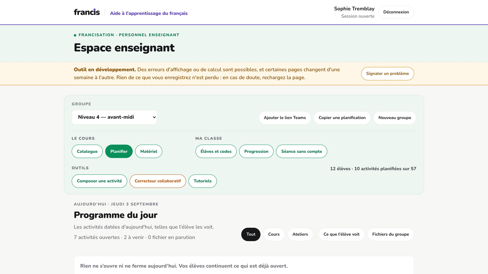
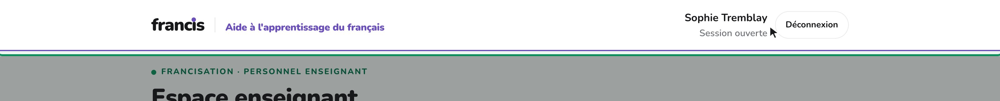
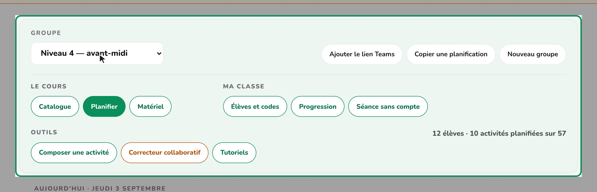
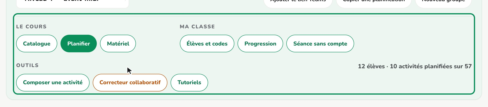
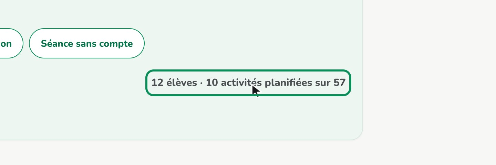

Espace enseignant · tutoriel 1
Bienvenue dans l'espace enseignant de francis. En quelques minutes, nous allons faire le tour de vos outils : ouvrir un groupe, donner des dates à vos activités, suivre vos élèves et sortir le matériel de la semaine.

Tout tient dans une seule page. En haut, une bande blanche : le nom de la plateforme, et à droite votre session. C'est aussi de là que vous vous déconnectez, à la fin de votre journée.

Juste en dessous, votre groupe. C'est la première chose à choisir, et tout le reste en découle : le niveau du groupe décide de ce que vous verrez du catalogue et du matériel. Changez de groupe, et vous changez de classe.

Sous le groupe, neuf boutons rangés en trois familles. Le cours : le catalogue, la planification, le matériel. Ma classe : les élèves et leurs codes, la progression, la séance sans compte. Et les outils, qui s'ouvrent chacun dans un nouvel onglet.

Au bout de la ligne, un résumé dit où vous en êtes : combien d'élèves, combien d'activités déjà planifiées. Dessous, le programme du jour. S'il est vide, c'est que rien n'ouvre ni ne ferme aujourd'hui — vos activités déjà ouvertes, elles, restent accessibles.

Voilà pour cette capsule. Vous connaissez maintenant les grandes pièces du portail : le groupe, les neuf boutons, le programme du jour. Les prochaines capsules reprennent chacun de ces neuf boutons en détail.